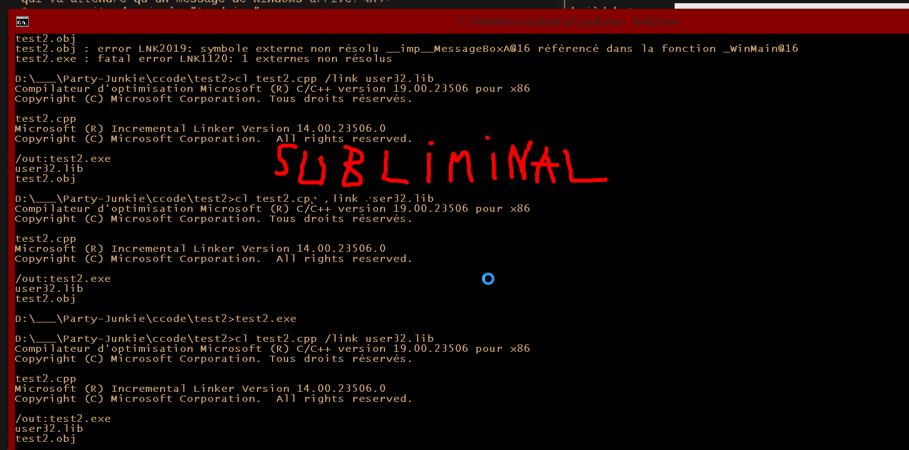

Ouvrir une fenétre: la bureaucratie française
Pour pouvoir ouvrir une fenétre, il faut d'abord l'"enregistrer" avec
RegisterClass.
RegisterClass demande de remplir une structure
WNDCLASS
pour faire son job.
Donc, pour initialiser une variable WNDCLASS, et initialiser tous ces
champs à 0:
WNDCLASS WindowClass = {0};
Window Class Styles
//TODO(doc): check if CS_OWNDC|CS_HREDRAW|CS_VREDRAW still matter
WindowClass.style = CS_OWNDC|CS_HREDRAW|CS_VREDRAW;
Le champs "lpfnWndProc" sera abordé dans la prochaine section.
WindowClass.lpfnWndProc = ;
Pour notre programme nous n'avons par besoin
de réserver plus de mémoire pour la WNDCLASS (cbClsExtra & cbWndExtra).
On va commencer par les champs qu'on connais: le champs hInstance.
L'instance de notre programme nous ai passé dans notre WinMain
WindowClass.hInstance = Instance;
Il est toujours possible de récupérer l'instance de son programme de
n'importe où avec
GetModuleHndle(0);
Pour notre programme nous n'avons par besoin (pour l'instant) de
définir une icone (hIcon), un curseur (hCursor), ni même
de définir une couleur de fond pour notre fenétre (hbrBackground).
Nous n'aurons pas non plus de "Menu" (Fichiers, Edition, ...)
(lpszMenuName).
WindowClass.lpszClassName = "RainbowCreatorWindowClass";
Après tout ça, il faut appeller "RegisterClass" en lui
passant notre structure.
WNDCLASS WindowClass = {0};
WindowClass.style = CS_OWNDC|CS_HREDRAW|CS_VREDRAW;
WindowClass.lpfnWndProc = ; //TODO(doc): explain what to add here
WindowClass.hInstance = Instance;
//NOTE(doc): not PJ's window class name
WindowClass.lpszClassName = "RainbowCreatorWindowClass";
CALLBACK WindowProc: Il vous manque des papiers
"Window Procedure" est une fonction qui
va recevoir tous les messages venant de windows.
WindowProc
Cette documentation définit la signature de la fonction:
le nom de la fonction et le nom des paramétres ne sont pas important
pour former un WindowProc valide.
On va donc rajouter sa définition:
LRESULT CALLBACK
MainWindowCallback(HWND Window,
UINT Message,
WPARAM WParam,
LPARAM LParam)
{
//TODO(doc): add smoething here;
}
Et nous pouvons compléter lpfnWndProc.
WNDCLASS WindowClass = {0};
WindowClass.style = CS_OWNDC|CS_HREDRAW|CS_VREDRAW;
WindowClass.lpfnWndProc = MainWindowCallback;
WindowClass.hInstance = Instance;
WindowClass.lpszClassName = "RainbowCreatorWindowClass";
MainWindowCallback doit répondre aux messages que windows lui evoi
pour que tout se passe bien et que windows sache que note fenétre
est toujours active / [répond aux action de l'utilisateur] /
[n'ai pas freezé].
Liste de tous les messages systeme existant
Les messages qui nous intéraissent là, tout de suite sont les
Window Notifications.
LRESULT CALLBACK
MainWindowCallback(HWND Window,
UINT Message,
WPARAM WParam,
LPARAM LParam)
{
LRESULT Result = 0;
switch(Message){
//NOTE(doc): when our windows is resized
case WM_SIZE:{
OutputDebugString("WM_SIZE\n");
}break;
//NOTE(doc): when windows "destroy" our window
case WM_DESTROY:{
OutputDebugString("WM_DESTROY\n");
}break;
//NOTE(doc): when the user click on the little red "X"
case WM_CLOSE:{
OutputDebugString("WM_CLOSE\n");
}break;
//NOTE(doc): when our windows gain or loses focus
case WM_ACTIVATEAPP:{
OutputDebugString("WM_ACTIVATEAPP\n");
}break;
//NOTE(doc): for every thing else
default:{
//NOTE(doc): call the default behaviour
Result = DefWindowProc(Window, Message, WParam, LParam);
}break;
}
return(Result);
}
ON VA ENFIN OUVRIR CETTE P**** DE FENETRE!!!!!
Maintenant que nous avons une struct WNDCLASS compléte, nous pouvons
la register:
WNDCLASS WindowClass = {0};
WindowClass.style = CS_OWNDC|CS_HREDRAW|CS_VREDRAW;
WindowClass.lpfnWndProc = MainWindowCallback;
WindowClass.hInstance = Instance;
WindowClass.lpszClassName = "RainbowCreatorWindowClass";
if(RegisterClass(&WindowClass))
{
//TODO(doc): OPEN THE FREAKING WINDOW
}
else
{
MessageBox(0, "RegisterClass FAIL",
"Party Junkie Rules", MB_OK|MB_ICONERROR);
}
Pour ouvrir une fenétre sous windows, on utilise
CreateWindowEx.
WNDCLASS WindowClass = {0};
WindowClass.style = CS_OWNDC|CS_HREDRAW|CS_VREDRAW;
WindowClass.lpfnWndProc = MainWindowCallback;
WindowClass.hInstance = Instance;
WindowClass.lpszClassName = "RainbowCreatorWindowClass";
if(RegisterClass(&WindowClass))
{
HWND WindowHandle =
CreateWindowEx(0, //NOTE(doc): we don't need any of this
WindowClass.lpszClassName, //NOTE(doc): the window class name
"Taste the Rainbow", //NOTE(doc): The actual window title
WS_VISIBLE|WS_OVERLAPPEDWINDOW, //NOTE(doc): WS_OVERLAPPEDWINDOW
CW_USEDEFAULT, //NOTE(doc): default x position
CW_USEDEFAULT, //NOTE(doc): default y position
CW_USEDEFAULT, //NOTE(doc): default width
CW_USEDEFAULT, //NOTE(doc): default height
0, //NOTE(doc): if you want windows inside windows
0, //NOTE(doc): we don't use menus
Instance, //NOTE(doc): our program instance
0); //NOTE(doc): don't need to pass a thing to our window
if(WindowHandle)
{
//TODO(doc): do things
}
else
{
MessageBox(0, "CreateWindowEx FAIL",
"Rainbow", MB_OK|MB_ICONERROR);
}
}
else
{
MessageBox(0, "RegisterClass FAIL",
"Rainbow", MB_OK|MB_ICONERROR);
}
Et si on compile et on lance l'application ...
Une fenétre apparait ! ....
Et le programme s'arête ... :'(
GetMessage: la réponse par courrier
Vous vous souvenez de MainWindowCallback ?
C'est à nous de prendre les messages de Windows et
de les passer à MainWindowCallback...
Pour celà on va utiliser
GetMessage
qui va attendre qu'un message de Windows arrive.
On va ensuite devoir le "traduire" avec
TranslateMessage.
Et enfin l'envoyer à Windows pour qu'il nous appelle à MainWindowCallback avec
DispatchMessage.
A la place de
//TODO(doc): do things
On va écrire:
MSG Message;
for(;;){
BOOL MessageResult =
GetMessage(&Message,
0, // NOTE(doc): do not filter witch window of our program
0,0); // NOTE(doc): do not filter witch messages
//NOTE(doc): if MessageResult = 0; you have to stop your application
if(MessageResult > 0)
{
TranslateMessage(&Message);
DispatchMessage(&Message);
}
else
{
//NOTE(doc): break the for loop
break;
}
}
Maintenant, si on lance l'app avec VS...

On ne peut pas la fermer >_<
Mais on verra ça plus tard: maintenant on va peindre !
Bureacratie & Peinture
Windows va nous demander de peindre notre fenétre par l'intermédiaire
du message WM_PAINT.
BeginPaint
EndPaint
Donc on va rajouter un case dans le MainWindowCallback:
case WM_PAINT:{
}break;